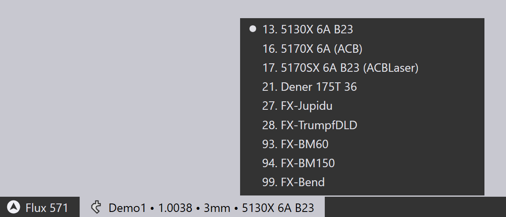

Utwórz dane gięcia
Za pomocą modułu gięcia możesz utworzyć dane technologii gięcia dla części z blachy. Nazywa się to również wyposażeniem detalu w narzędzia w celu przygotowania do gięcia. Załóżmy, że zainstalowano już maszynę i skonfigurowano magazyn narzędzi oraz że zaimportowano część CAD (2D lub 3D):

Przełączanie na Bend CAM
Teraz detal można wyposażyć w narzędzia do gięcia, po prostu naciskając przyciskB. Detal zostaje podpięty do domyślnej giętarki, którą jest ostatnio używana prasa krawędziowa. Wyznaczana jest kolejność narzędzi, konfiguracja gięcia, pozycje pomiarowe i powinien wyświetlić się tego typu wynik:

Jeśli nie ma błędów, program NC (i ewentualnie arkusz konfiguracji) dla detalu zostaną również wygenerowane i zapisane w folderze wyjściowym, który jest skonfigurowany dla tej maszyny. Oto sekcja z typowej konfiguracji detalu sheet[1] (znany również jako raport z gięcia).

| Zobacz także panel Przepływ pracy, do którego można uzyskać dostęp, naciskając klawisz W. Zapewnia to większą kontrolę nad tworzeniem danych technologii gięcia i opcjami kierowania detalu metodą lasera CAM lub metodą układania. |
Dalsze działania
Oto krótkie podsumowanie niektórych operacji, które można wykonać po wyposażeniu detalu w celu przeprowadzenia gięcia.
-
Jeśli klikniesz Spacebar, rozpocznie się symulacja gięcia. Można również użyć opcji sterowniczych w Nawigatorze gięcia w celu uruchomienia, zatrzymania lub przewijania symulacji:

-
Jeśli są jakieś ostrzeżenia lub błędy, pojawiają się one w Nawigatorze gięcia, gdzie można je przeglądać i usuwać, klikając odpowiednie komórki:

-
Można edytować przygotowanie oprzyrządowania do gięcia (stemple i matryce), konfigurację pomiarową lub konfigurację pomiaru kąta, klikając bezpośrednio na ten obiekt w widoku symulacji:

-
Maszynę można zmienić, klikając jej nazwę w zakładce poniżej detalu i wybierając inną maszynę:
 -
Kliknij ikonę Settings
 na pasku narzędzi po lewej stronie, aby edytować dodatkowe ustawienia dla każdego gięcia (lub edytować ustawienia domyślne używane dla tej giętarki lub dla całego TecZone Bend zastosowania).
na pasku narzędzi po lewej stronie, aby edytować dodatkowe ustawienia dla każdego gięcia (lub edytować ustawienia domyślne używane dla tej giętarki lub dla całego TecZone Bend zastosowania). -
Kliknij ikonę Display
 na lewym pasku narzędzi, aby edytować widok maszyny – można włączyć wyświetlanie dodatkowych elementów, takich jak szyna matrycy, belka gnąca, wspornik tylnego zderzaka, system włączony lub wyłączony. Można również zamienić widok różnych komponentów na prześwitujący.
na lewym pasku narzędzi, aby edytować widok maszyny – można włączyć wyświetlanie dodatkowych elementów, takich jak szyna matrycy, belka gnąca, wspornik tylnego zderzaka, system włączony lub wyłączony. Można również zamienić widok różnych komponentów na prześwitujący.
Gdy rozwiązanie gięcia zostało stworzone bez żadnych błędów, program NC detalu i arkusz konfiguracyjny gięcia zostają wygenerowane automatycznie. Można użyć strony ustawień:../Ustawienia/BendCAM/DaneWyjścioweGięcia #[Dane wyjściowe gięcia], aby ustawić, czy program NC części i arkusz konfiguracyjny zostaną wygenerowane automatycznie, a także skonfigurować miejsce docelowe dla tych danych wyjściowych oraz format raportów. Jeśli kod został wygenerowany, przycisk programu NC na lewym pasku narzędzi jest wyszarzony:

Po wprowadzeniu jakichkolwiek zmian w detalu, ten przycisk zostanie ponownie włączony i można ponownie wygenerować program NC, klikając ponownie tę ikonę (lub naciskając klawiszC).